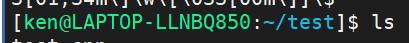

1. if statement
XLFPATH="${XLF_PATH:-/gsa/tlbgsa/projects/x/xlcmpbld/run/xlf/dev_lite/linux_leppc/daily/${XLF_DRIVER:-latest}/bin}"
If XLF_PATH exist, XLFPATH=$(XLF_PATH)
else if XLF_DRIVER exist, XLFPATH=/gsa/tlbgsa/projects/x/xlcmpbld/run/xlf/dev_lite/linux_leppc/daily/${XLF_DRIVER}/bin
else
XLFPATH=/gsa/tlbgsa/projects/x/xlcmpbld/run/xlf/dev_lite/linux_leppc/daily/latest/bin
2. replace every string
replace a space ( ) with a dot (.) in a string in bash
foo=" "
# replace first blank only
bar=${foo/ /.}
# replace all blanks
bar=${foo// /.}
For example
NOBINPATH=/opt/ibm:/opt:/usr/bin
BINPATH=${NOBINPATH//:/:/bin}
3. set the color
https://blog.csdn.net/zhangym199312/article/details/77600375
https://blog.csdn.net/jinbusi_blog/article/details/69371078
在PS1中设置字符颜色的格式为：[\e[F;Bm]，其中“F“为字体颜色，编号为30-37，“B”为背景颜色，编号为40-47。颜色表如下：
[\e[F;Bm]需要改变颜色的部分[\e[0m]
开始颜色输入：[\e[F;Bm]
结束颜色输入：[\e[0m]
F B
30 40 黑色
31 41 红色
32 42 绿色
33 43 黄色
34 44 蓝色
35 45 紫红色
36 46 青蓝色
37 47 白色
设置特殊显示
0 OFF，关闭颜色
1 高亮显示
4 显示下划线
5 闪烁显示
7 反白显示
8 颜色不可见
特殊显示可在结束颜色输入里面设置：[\e[ 特殊颜色编号 m]
根据颜色表，套用入字符颜色设置格式中，就可以对linux终端命令行颜色进行个性化设置了。比如要设置命令行的格式为黄字黑底，显示当前用户的账号名称、主机的第一个名字、完整的当前工作目录名称、24小时格式时间，就可以使用如下的命令：PS1=”[\e[32;40m][\u@\h \w \T]$[\e[0m]”
我目前使用: export PS1='[\u@\h:\w]\$ '
export PS1='[\[\033[01;32m\]\u@\h\[\033[00m\]:\[\033[01;34m\]\w\[\033[00m\]]\$ '
我所使用的
export PS1='[\[\033[01;32m\]\u@\h\[\033[00m\]:\[\033[01;34m\]\w\[\033[00m\]]\$ '

4 change the default shell
https://www.jianshu.com/p/1661b8c03edd
echo $SHELL
$ chsh
Password:
Changing the login shell for shkzhang
Enter the new value, or press ENTER for the default
Login Shell [/bin/sh]: /bin/bash